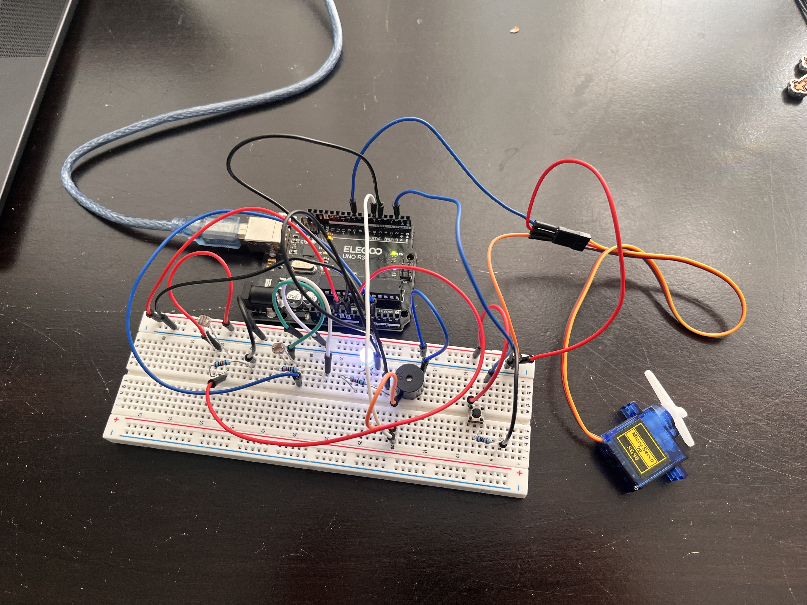
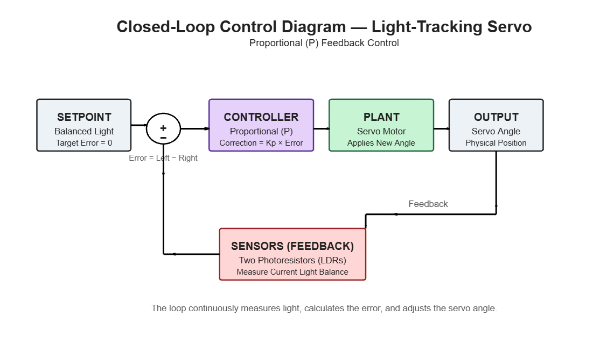
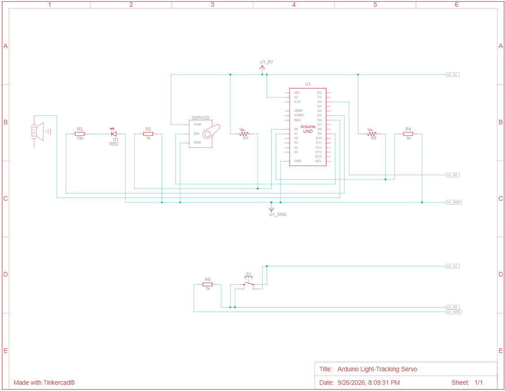

Arduino Light-Tracking Servo
A closed-loop Arduino system that uses two photoresistors to detect and track a light source, continuously adjusting a servo's position in real time.
Overview
This project began as a straightforward triggered circuit: a button press activated a servo, an LED, and a buzzer. The motivation for expanding it was simple. The original circuit could only execute a fixed command when triggered, with no ability to sense or respond to its surroundings. After studying closed-loop control in Control of Dynamic Systems, I was inspired to create and model a closed-loop control system of my own. I redesigned the circuit around two photoresistors and a proportional control algorithm so the servo could continuously track a light source and adjust its position as the environment changed. To document the design, I created a block diagram of the control loop and a wiring diagram of the circuit.
How It Works
Two photoresistors are positioned on either side of the servo mount, each wired as a voltage divider feeding an analog input. The Arduino continuously samples both sensors and calculates the difference between their readings, which serves as the system's error signal — zero when the light source is centered, and increasingly large as it shifts to one side. This error is scaled by a proportional gain constant and applied as a correction to the servo's position, producing a system that adjusts its output in proportion to how far it currently is from its target state. Because this measurement and correction cycle runs continuously rather than once, the servo actively follows a moving light source rather than executing a single predetermined motion.
Design & Build Process
- Designed and wired the original circuit — pushbutton, LED, buzzer, and servo — and produced a complete electrical schematic documenting every connection and component value.
- Implemented the initial open-loop logic, in which a button press triggered a fixed sequence of outputs with no sensing involved.
- Recognized the core limitation of this design: without any means of sensing its environment, the system could only repeat a scripted response rather than adapt to changing conditions.
- Integrated two photoresistors in a voltage-divider configuration to provide the system with real-time environmental input.
- Developed a proportional control loop that calculates the error between the two sensor readings and adjusts the servo's angle accordingly, replacing the fixed-position logic of the earlier version.
- Identified and resolved a jitter issue caused by minor sensor noise being interpreted as meaningful error, by introducing a deadband threshold below which no correction is applied.
- Replaced blocking
delay()calls with amillis()-based timing structure, allowing the control loop to run on a consistent interval without interrupting continuous sensor monitoring. - Tuned the proportional gain empirically, using live sensor and servo-angle output through the Serial Monitor to balance responsiveness against stability.
Key Takeaways
This project clarified, in a hands-on way, the distinction between a system that executes commands and one that responds to feedback — a distinction that underlies most real-world control and robotics applications. Manually tuning the proportional gain gave me a practical understanding of the tradeoff between responsiveness and stability, since excessive gain produced oscillation while insufficient gain resulted in sluggish tracking. I also came away with a stronger appreciation for the less visible parts of embedded systems design, including noise filtering and non-blocking timing, both of which proved essential to reliable performance. This project strengthened my interest in mechatronics, and I plan to extend it further with full PID control and a motor-and-encoder platform in place of the servo.
System Design & Implementation

